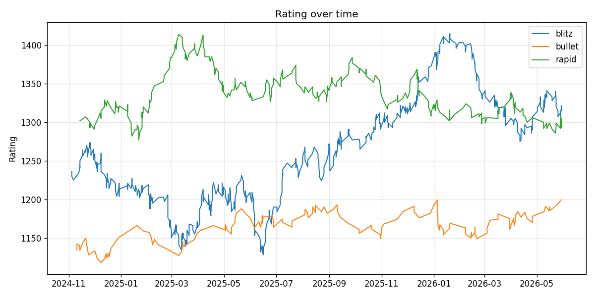
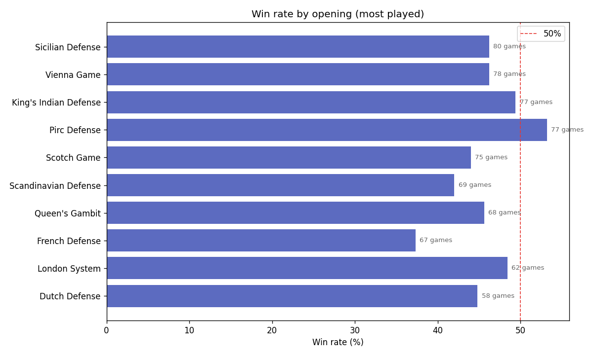
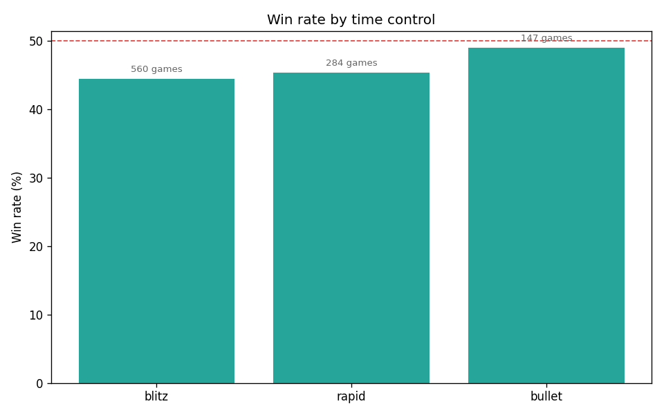
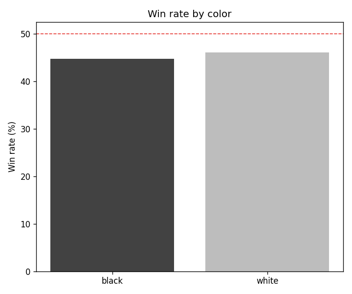
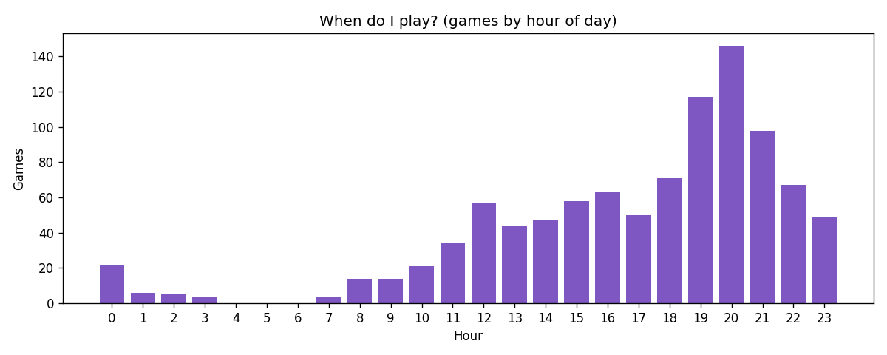

chess-insights
Analysis of 991 online chess games with Python and Pandas.
Code and instructions on GitHub —
run it on your own Lichess games.
991games analysed
45.4%win rate
1415peak rating
1265avg opponent
Rating over time
Split by time control. Blitz is where most of the games (and the pain) are.

Win rate by opening
Only openings with at least 10 games, to avoid small-sample noise.

The tilt check
Loss rate right after a loss: 51.5% · right after a win: 45.0%.
In other words: revenge games are a trap. The data says take a break.
Time controls and colors


When do I play?
Mostly evenings, which surprised exactly nobody.
